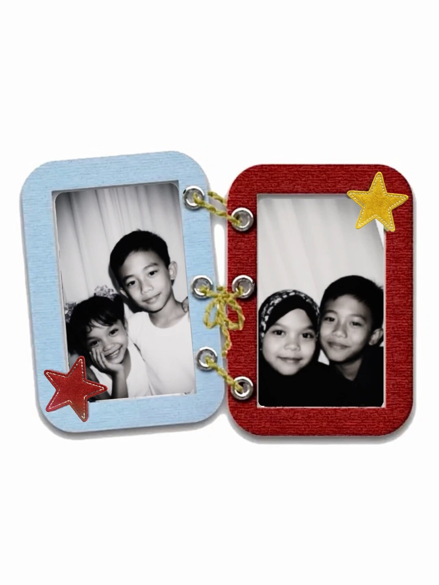

To My Favorite Boy ❤️
Open me ♡Dear my love,
Happy birthday, handsome! 🎂
Yeayyyy, pacarkuuu sekarang udah 22 tahunnn! Hihihi, happy birthday to my favorite boy in the whole worlddd! 🥹🫶🏻🎉 Semoga di usia yang baru ini, hidup kamu makin dipenuhi kebahagiaan, banyak hal baik, rezeki yang lancar, dan alasan-alasan kecil yang bikin kamu tersenyum setiap hari. Semoga semua yang kamu harapkan bisa perlahan-lahan terwujud, yaa, sayanggg! Aamiin paling seriusss! 🤲🏻💗✨
Di hari spesial kamu ini, aku berdoa semoga Allah selalu menjaga dan melindungi kamu di mana pun kamu berada. Semoga kamu selalu sehat, panjang umur, bahagia, hatinya tenang, dan semua urusanmu dimudahkan. Semoga langkah kamu selalu diberi kelancaran, rezekimu makin luas, dan kamu selalu dikelilingi orang-orang baik yang tulus menyayangi kamu. Pokoknya, semoga banyak banget hal indah yang datang ke hidup kamu tahun ini, yaa, cintakuuu! 🌷🤍🧸
Semoga di umur 22 tahun ini, satu per satu impian kamu bisa tercapai. Semoga semua usaha yang selama ini kamu lakukan membawa hasil yang bikin kamu bangga sama diri sendiri. Aku pengen banget lihat kamu bahagia saat berhasil mendapatkan hal-hal yang selama ini kamu perjuangkan. Semoga nanti ada banyak momen yang bikin kamu bilang, "Ternyata semua usaha aku selama ini nggak sia-sia, ya!" Huhuuu, aku pasti ikut seneng dan bangga banget sama kamuuu! 🥹💐💖
Sayanggg, jangan lupa buat menikmati hari-hari kamu, yaa. Jangan sibuk mengejar banyak hal sampai lupa kasih waktu buat diri sendiri. Kalau capek, istirahat dulu. Kalau lagi penat, cari hal-hal kecil yang bikin kamu seneng. Kamu nggak harus selalu produktif setiap hari, kok. Aku harap kamu bisa menjalani hidup dengan hati yang lebih ringan, lebih banyak tertawa, dan lebih sering merasa bahagia. Kamu juga pantas menikmati semua hal baik yang datang ke hidupmu, sayangkuuu! 🐻🫂💕
Aku bangga sama kamu, sama semua usaha yang udah kamu lakukan, dan sama diri kamu yang terus tumbuh sampai hari ini. Mungkin masih banyak hal yang ingin kamu capai, tapi jangan lupa kalau kamu juga udah melewati banyak hal untuk sampai di titik ini. Jadi, jangan lupa apresiasi diri sendiri, yaa! Aku harap kamu selalu punya semangat buat mencoba hal-hal baru, keberanian buat mengejar impianmu, dan keyakinan kalau banyak hal baik masih menunggu kamu di depan sana. SEMANGAT TERUS, LAKI-LAKI HEBATKUWWW! 🥳💪🏻❤️🔥
Terima kasih yaa, sayang, karena udah hadir di hidup aku. Aku seneng banget bisa kenal kamu, bisa sayang sama kamu, dan bisa punya cerita bareng kamu. Kehadiran kamu jadi salah satu hal yang aku syukuri. Aku harap aku bisa terus jadi orang yang menemani hari-hari kamu, mendengarkan cerita kamu, ikut merayakan kebahagiaan kamu, dan menghibur kamu saat harimu lagi kurang menyenangkan. Aku pengen kamu selalu merasa disayang, dihargai, dan nggak sendirian. HEHEHE, POKOKNYA AKU MAU KAMU BAHAGIAAA! 🥹💗💋
Aku juga berharap semoga hubungan kita selalu dipenuhi kebahagiaan, kasih sayang, kesabaran, dan pengertian. Semoga kita bisa terus tumbuh bersama, saling mendukung impian satu sama lain, belajar memahami satu sama lain, dan menciptakan banyak kenangan indah. Semoga masih ada banyak tanggal ulang tahun yang bisa kita rayakan bareng, banyak cerita lucu yang bisa kita ingat, banyak foto bersama, banyak makanan enak yang bisa kita coba, dan banyak momen sederhana yang nantinya jadi kenangan paling berharga buat kita. AAMIINNN! 🫶🏻🎀💞📸
Sekali lagi, SELAMAT ULANG TAHUN YANG KE-22, LAKI-LAKI KESAYANGANKUUU! 🥳🎂🎁❤️ Semoga hari ini jadi hari yang menyenangkan buat kamu. Semoga kamu banyak tersenyum, banyak tertawa, mendapatkan doa-doa baik, dan merasakan betapa berharganya diri kamu. Hari ini kamu harus bahagia banget, yaaa! Kalau bisa, senyumnya jangan berhenti dari pagi sampai malam, HEHEHE. KALAU KAMU SENENG, AKU JUGA IKUT SENENGGG! 😚💗🌈
Aku berharap di usia yang baru ini, kamu mendapatkan lebih banyak kesempatan untuk melakukan hal-hal yang kamu suka, bertemu dengan banyak hal menyenangkan, dan merasakan kebahagiaan dari hal-hal sederhana. Semoga hari-hari kamu ke depannya dipenuhi kabar baik, kejutan manis, tawa yang lepas, dan momen-momen yang bikin kamu bersyukur. Semoga semua doa baik yang kamu ucapkan diam-diam bisa menemukan jalannya untuk menjadi kenyataan. Aamiin ya Allah! 🤲🏻🌷✨
Aku sayang banget sama kamu, lebih dari yang mungkin bisa aku jelasin lewat kata-kata. Makasih udah jadi kamu, makasih udah hadir di hidup aku, dan makasih karena sampai hari ini aku masih bisa menyebut kamu sebagai laki-laki kesayanganku. Aku harap kamu selalu ingat kalau ada aku yang ikut mendoakan kebahagiaan kamu, ikut bangga atas pencapaian kamu, dan selalu berharap yang terbaik buat kamu. Semoga kita bisa terus saling menyayangi dan punya banyak alasan untuk tersenyum bersama, yaa, cintakuuu! 🥹💋💓
Happy 22nd birthday, my loveee! 🎂🐻💗 Here's to more birthdays, more laughter, more hugs, more silly moments, more memories, and more beautiful days together. Semoga umur 22 ini membawa banyak kebahagiaan dan menjadi awal dari banyak hal indah dalam hidup kamu. Tetap sehat, tetap bahagia, tetap semangat, dan jangan lupa jadi diri kamu sendiri, yaa, sayanggg!
I LOVE YOU SOOO MUCHHH, MY FAVORITE BOYYYY!! ❤️🔥💋🫶🏻🎀 Semoga kita bisa merayakan ulang tahun kamu lagi tahun depan, tahun depannya lagi, dan tahun-tahun berikutnya. Aku mau terus punya kesempatan buat bilang happy birthday ke kamu, mendoakan kamu, dan melihat kamu tumbuh menjadi versi diri kamu yang makin bahagia. LOVE YOU TO THE MOON AND BACK, CINTAKUUU! 🌙⭐💞😘
With all my love,
Tarisza Wulandari 💋
tap open me to open💌